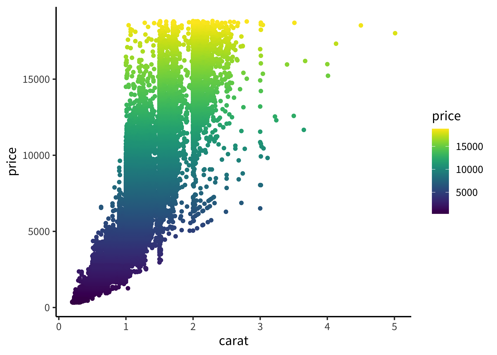
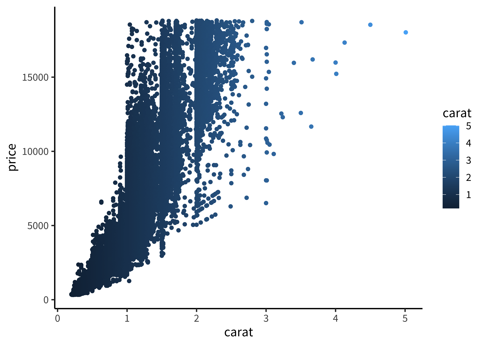
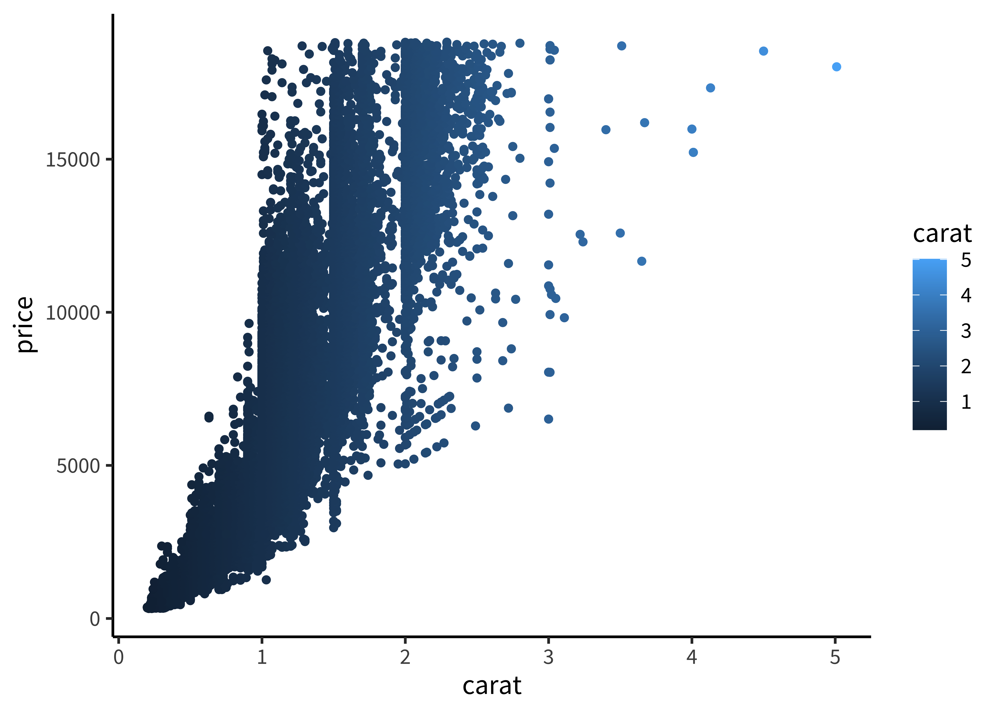
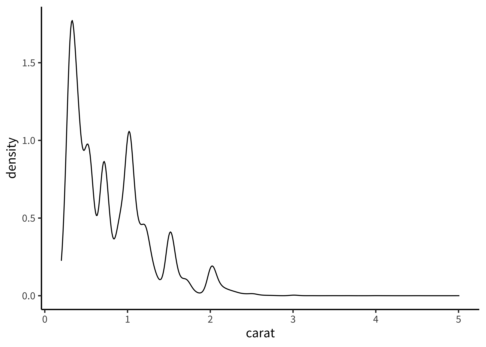
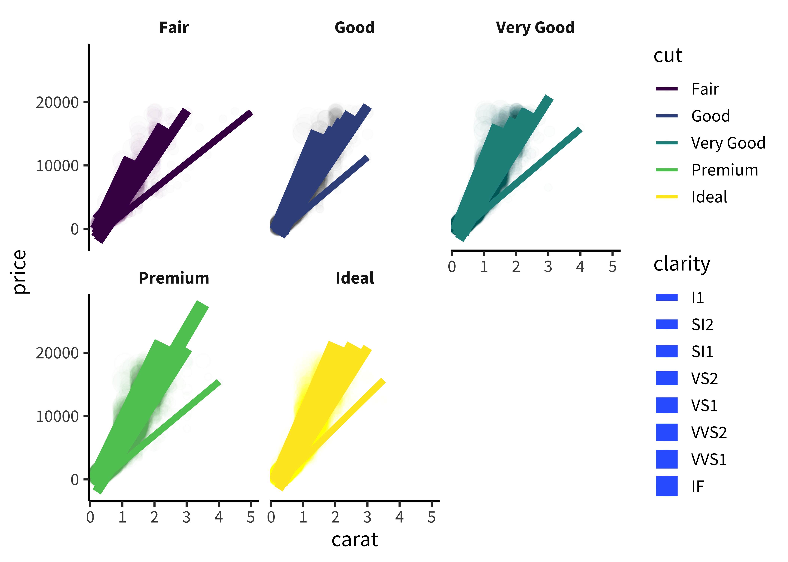
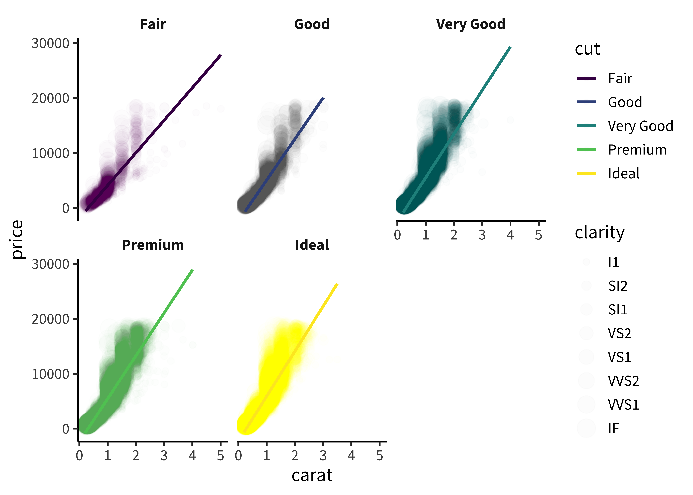

D ggplot
D.1 Exploring ggplot2 using qplot
We’ll start by using qplot. qplot is the easy interface, meant to replace plot. You can give it simple qplot(x,y) examples, or slightly more complex examples like qplot(x, y, col=grp, data=d).
We’re going to be using the diamonds dataset. This is a set of measurements of diamonds, along with their price etc.
#> # A tibble: 6 × 10
#> carat cut color clarity depth table price x y z
#> <dbl> <ord> <ord> <ord> <dbl> <dbl> <int> <dbl> <dbl> <dbl>
#> 1 0.23 Ideal E SI2 61.5 55 326 3.95 3.98 2.43
#> 2 0.21 Premium E SI1 59.8 61 326 3.89 3.84 2.31
#> 3 0.23 Good E VS1 56.9 65 327 4.05 4.07 2.31
#> 4 0.29 Premium I VS2 62.4 58 334 4.2 4.23 2.63
#> 5 0.31 Good J SI2 63.3 58 335 4.34 4.35 2.75
#> 6 0.24 Very Good J VVS2 62.8 57 336 3.94 3.96 2.48
Scatter plots are trivial, and easy to add features to. Modify this plot so that it uses the dataframe rather than working from variables in the general namespace (good to get away from retyping diamonds$ every time you reference a variable).

Try adding clarity and cut, using shape and color as your visual variables.
D.2 Making more complex plots with ggplot
ggplot is just a way of building qplot calls up more systematically.
It’s sometimes easier to use and sometimes a bit more complicated.
What I want to show off here is the functionality of being able to build up complex plots with multiple elements.
Once you get used to thinking in ggplot style — building up plots one ‘layer’ at a time — it’s hard to go back!
ggplot is the basic call, where you specify (A) a dataframe and (B) an aesthetic (aes) mapping from variables in the plot space to variables in the dataset.
 

Try writing this as a single set of additions (e.g. one line of R code, though you can put in linebreaks). This is the most common workflow for me.

D.3 Facets
Let’s try out another version of the qplot example above. Rewrite the last qplot example with ggplot.

One of the primary benefits of ggplot2 is the use of facets - also known as small multiples in the Tufte vocabulary. That last plot was probably hard to read. Facets could make it better. Try adding facet_grid(x ~ y). x ~ y means row facets are by x, column facets by y.

But facets can also get overwhelming. Try to strike a good balance between color, shape, and faceting.
HINT: facet_grid(. ~ x) puts x on the columns, but facet_wrap(~ x) (no dot) wraps the facets.

D.4 Geoms
As you’ve seen above, the basic unit of a ggplot plot is a “geom” - a mapping between data (via an “aesthetic”) and a particular geometric configuration on coordinate axes.
Let’s try adding some geoms and manipulating their parameters. One combo I really like is a scatterplot with a smoothing layer (geom_smooth). Try adding one onto this plot.

You could also try starting with a histogram and adding densities. (geom_density), Try this link.

D.5 Themes and plot cleanup
I like a slightly cleaner look to my plots. Luckily, ggplot allows you to add “themes” to your plots. Try doing the same plot but adding + theme_bw() or + theme_classic(). Different themes work better for different applications, in my experience. My favorite right now is ggthemes::theme_few.
You can also try different color scales. Experiment with scale_color_... - try writing that and hitting TAB for autocomplete options. Check out the help on this.
You can also try transparency/different point sizes to clean up scatterplots. Try alpha = .1 or pch = "." to make transparent or small points.
Finally, don’t forget to “fix the axis labels”!
Here’s a somewhat ugly plot - see if you can make it look awesome.

D.6 Plot inheritance example
Let’s take this base plot.

Say I want to map clarity to be mapped to size. Try adding it to the top level. This doesn’t work.
 The reason is inheritance. I want the POINTS to have sizes, but the smoothing lines not to have that AES feature.

D.7 Conclusion
There’s a lot more to learn about ggplot, and some fairly simple operations end up being surprisingly challenging.
Remember: to use ggplot successfully, you don’t need to memorize all of the geoms, or be able to write out all the options from scratch.
Plots are made through trial and error, and you have the entire Internet at your fingertips.
Even experts find themselves Googling “how to change aspect ratio in ggplot” and copy-pasting the code they find.
Over time, as you make more plots, you will get faster at finding what you’re looking for.
When you’re ready to apply your ggplot skills, go to Chapter 15 for more examples of how to use visualizations in your research workflow.